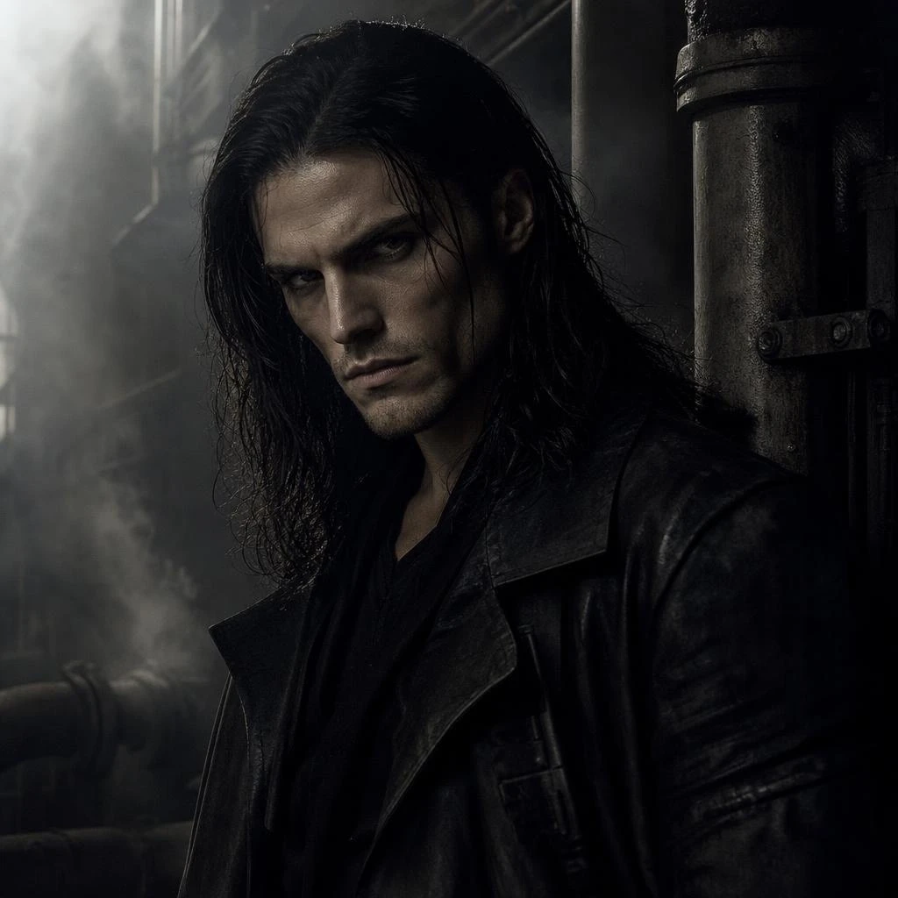
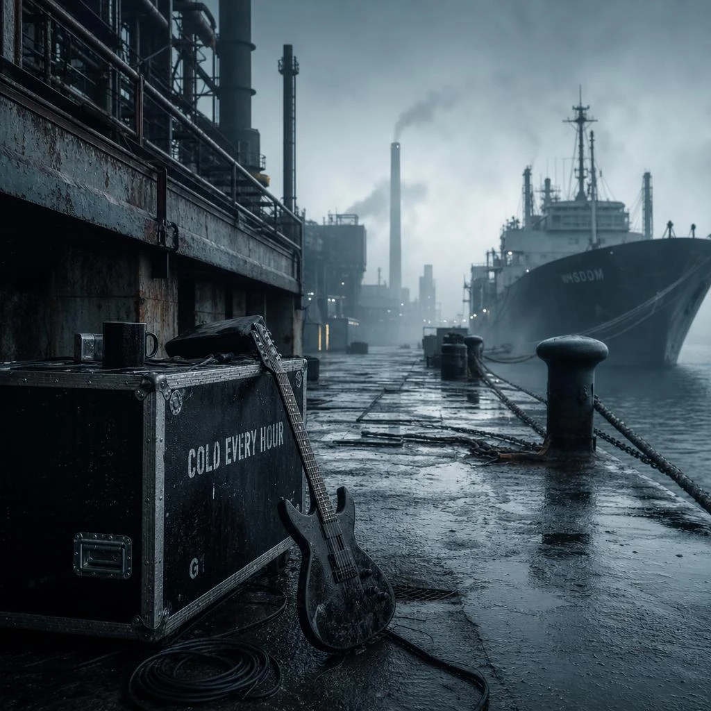
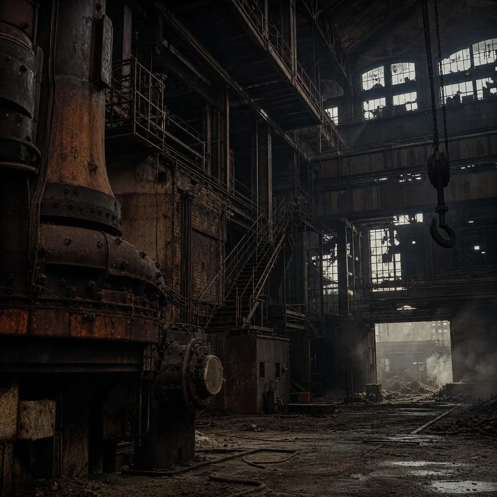
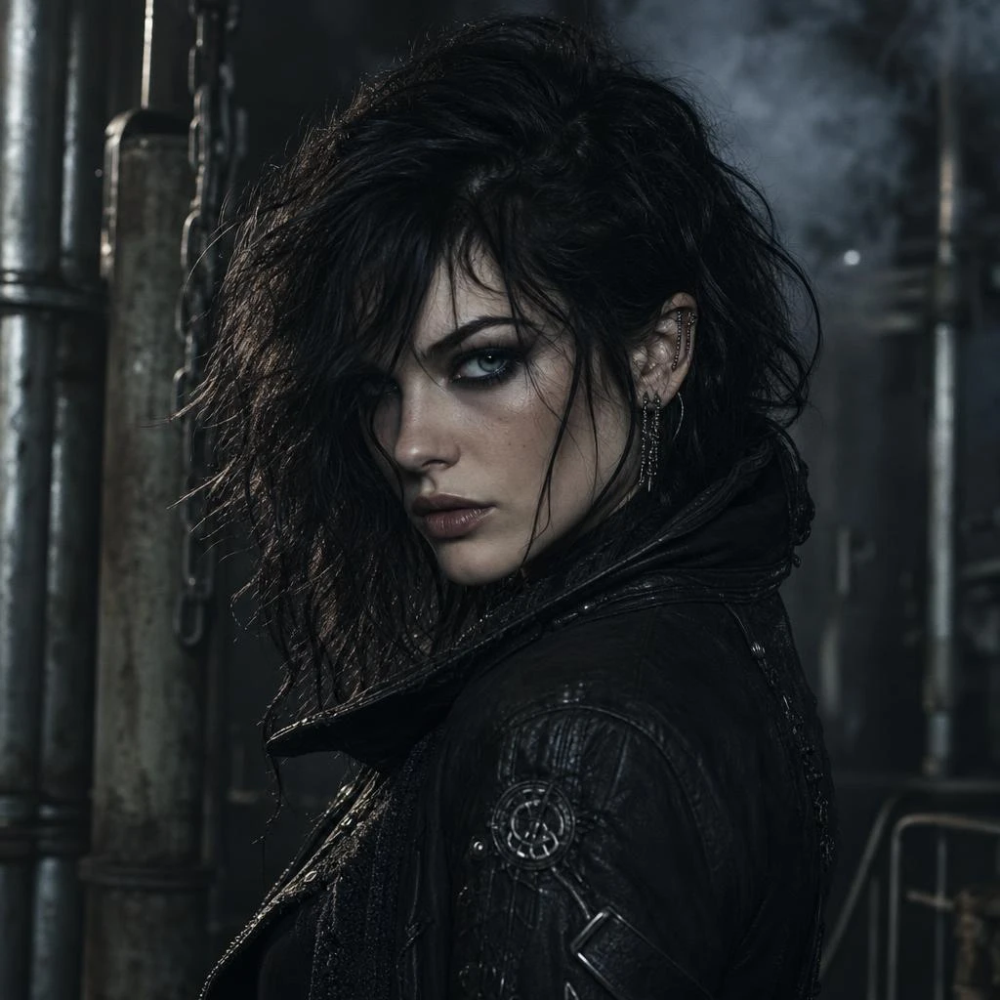
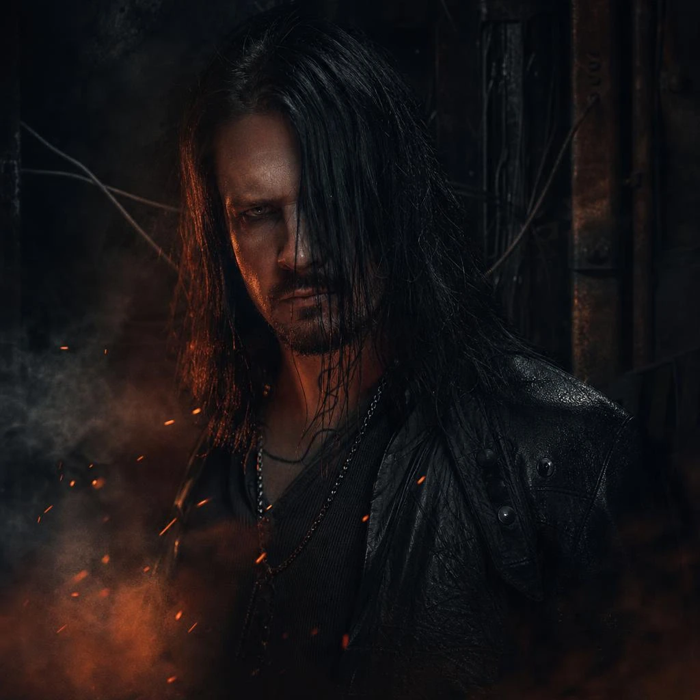
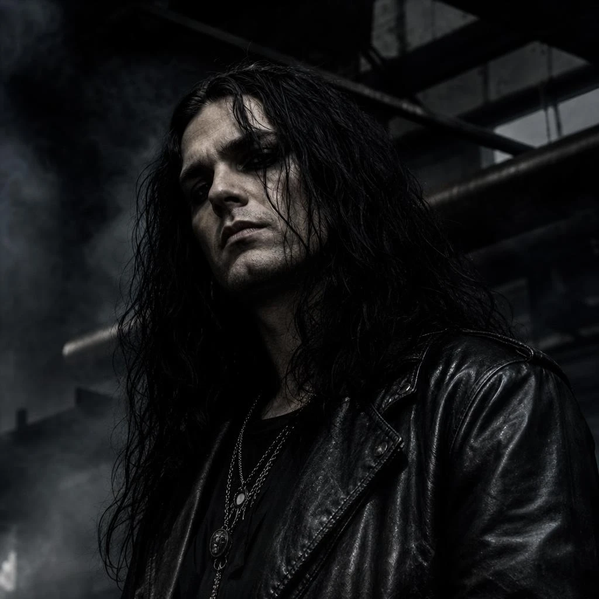

Kael Voss
Voice / Doctrine. Writes the liturgy. Holds the center of the storm without raising the volume first.

The Band
Band Story
The first rehearsals were not in a practice room. They were in a decommissioned rolling mill where the roof still leaked coal-black water onto the floor. Kael Voss had a notebook of hymns that refused church. Sable Thorne had a guitar that sounded like a beam collapsing in slow motion. Idris Kane and Nyx Calder arrived the same night and never left the grid.
Vesperfall was never a local secret for long. Night of the Furnace carried the Sheffield mill-dust onto European late-night radio. Iron Liturgy proved the riffs could hold an arena without sanding off the myth. Ashen Thrones is the first record written as a single ceremony — ten movements, one crown, no encore doctrine.
Offstage the band keeps a private pace: stone courtyards, night trains, analog tape, and the kind of silence that makes a downbeat feel like a verdict. The luxury is not chrome. It is control.

Members

Voice / Doctrine. Writes the liturgy. Holds the center of the storm without raising the volume first.

Lead guitar / Atmosphere. Builds the weather — harmonic rust, choir-like leads, and the cut that names a song.

Bass / Low architecture. Treats the low end as structure, not decoration — the floor the myth has to stand on.

Drums / Percussive rite. Industrial precision with organic swing — the hammer and the heartbeat in the same bar.
Creative Philosophy
“We write for the body first and the myth second. If the riff does not bruise, the story cannot crown it.”